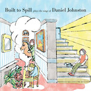

Quick Takes (November 2020 - Covers Edition)
In a year where those artists dependent on live performance (that would be almost all of them) were unable to tour, the obvious move would seem to be to create something new. Unfortunately, the string of emerging pandemic, lockdown, racially motivated murders on television, and an election outcome more bizarre than anyone could have imagined, didn’t exactly get the creative juices flowing for some. So into the void, steps what turned out to be the year of the covers albums. Among others, there were entries from Whitney, Molly Tuttle, Bartees Strange, Emma Swift, Built to Spill, a Sharon Jones compilation, and a particularly inventive approach from Deerhoof. And not to be outdone, November brought us two of the year’s best with Marika Hackman’s and Lambchop’s entries. - Mark
Quick Takes will take a short break until early February. We'll be back with our picks for January 2021, but until then, keep your eyes peeled for more great features and, of course, full-length reviews. And it does bear repeating: you can always reach us on Facebook, Instagram, and on our official twitter page.
...
Built to Spill
Built to Spill Plays the Songs of Daniel Johnston
(Ernest Jenning Record Co.)
The idea of a Daniel Johnston covers album performed by Built to Spill came about after the veteran indie-rock band supported Johnston on a joint 2017 tour. And though there's something precious about their working relationship, 'Built to Spill Plays the Songs of Daniel Johnston' sounds as nondescript as the album title itself. There's nothing inherently wrong with the approach that frontman Doug Martsch and his bandmates took with these songs; it's just hard to entirely justify its existence. Chugging, jangling versions of "Honey I Miss You" and "Life in Vain" are tuneful and serviceable, stripping out Johnston's idiosyncratic touch while faithfully aligning to his simple, primal songwriting style. On the other hand, their version of Good Morning You sticks to the original's scrappy melodicism, and at a minute and a half, doesn't overstate its welcome. Martsch himself intended the album to sound like a demo tape of sorts—wanting to capture the atmosphere of three guys in a room just jamming it out for kicks. But in selling himself short, he's also implying the project itself isn't very attractive, either. [6/10] Juan Edgardo Rodriguez
 Deerhoof
Deerhoof
Love-Lore
(Joyful Noise)
Where do you even begin with Deerhoof's remarkably unhinged stealth drop, Love-Lore? At its core, it's five tracks, each cramming together artists as disparate as composer Raymond Scott, Gary Numan, and Knight Rider theme. But in true Deerhoof-ian fashion, the band finds a way to bring all these clashing sounds together and reinterpret them into their artful, quasi-improvisational approach. What's also impressive is how, except for the 19-minute bombast of Love-Lore 4, they manage to make each of them land within 3-to 5-minute medleys. Truthfully, though, you could also say that turning Ornette Coleman's intricate free jazz and Voidvod's thrash metal into explosive garage rock makes sense in its twisted, warped way. Besides, isn't genre a construct when were capturing the spirit of two visionaries together? Even the Velvet Underground/Laurie Anderson melding of Love-Love 5 doesn't have any right to sound this moving. And that's just scratching the surface—Love-Lore is a freeform and chaotic homage to past sounds that, though true to the band's character, are shot through with twists that leave us guessing. [8/10] Juan Edgardo Rodríguez
Lambchop
TRIP
(Merge)
Setting aside the Deerhoof album mentioned above, leave it to Lambchop to come up with the most off the wall covers album of the year. The album’s title, TRIP, may be a reference to the blotter paper insert (presumably microgram free) that comes with the Peak Vinyl version of the release, and the listening experience may be best ingested in an altered state. The opening cover of Wilco’s Reservations is 13 minutes long and was the initial single! The song is essentially played twice—once with Kurt Wagner in piningly earnest mode and then as a deconstructed instrumental that is surprisingly compelling. It’s not shocking that the band delves into unreleased material by Yo La Tengo’s James McNew or an ultra-obscure single by mid-70’s underground band Mirrors. Elsewhere though, the band’s early country roots come to bear on George Jone’s Where Grass Won’t Grow, and the gentle drift of Stevie Wonder’s Golden Lady appeal to fans of the band’s minor key mid-period. Worthwhile and weird. [7/10] Mark Moody
 Marika Hackman
Marika Hackman
Covers
(Sub Pop Records)
Although Marika Hackman’s covers album lacks for originality in the title department, she more than makes up for it over the course of the ten tracks. Both creative in the diversity of source material, as well as making the songs her own, Hackman’s covers album ends up one of the finest of the year. The songs pulled from Elliott Smith, Sharon Van Etten, and Edith Frost (the most underground pick and least modified), hit the appropriate sad boy/girl motif that runs through the album. What is more impressive, though, is Hackman’s ability to take the most irrepressible melodies and crush them into a blue-hued submission. Who knew The Shins’ Phantom Limb had sensical lyrics as well as a heart of gold? Credit to Hackman for making others’ songs fit seamlessly into her own mold, even if the seriousness of Beyonce’s All Night can’t help but turn into the slow burn bop it was intended to be. [8/10] Mark Moody
9 December, 2020 - 23:26 — No Ripcord Staff